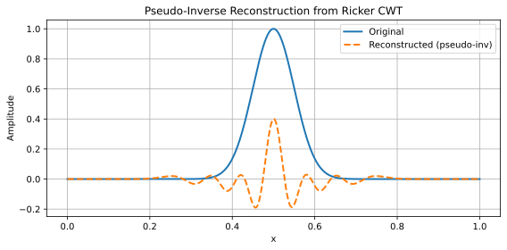
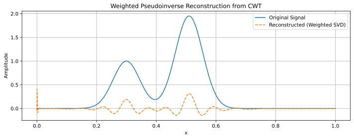

🔄 Pseudo-Inverse Reconstruction of Signals Using Ricker Wavelets
📑 Synopsis
The Ricker wavelet offers good peak sensitivity and scale localization, ideal for chromatographic or spectroscopic signals.
Use
pywtinstead of deprecatedscipy.signal.ricker.Never add raw transforms across scales — it inflates energy.
Use
DNAsignal.pseudoinverse(scales)to apply the correct reconstruction.
📌 This document explains how to reconstruct a 1D signal using a pseudo-inverse method based on Ricker wavelet transforms across multiple scales. This technique is implemented in
DNAsignal.pseudoinverse(scales, method=...)and relies on SVD-based or energy-weighted inverse projections.
🌊 Wavelet Transform Fundamentals
Let \(f(x)\) be a real-valued signal and \(\psi(x)\) a real, symmetric wavelet. The scaled and translated wavelet is defined as:
The Continuous Wavelet Transform (CWT) of \(f\) with respect to \(\psi\) is:
This transform provides a multiscale analysis of \(f\), revealing localized features such as peaks and singularities.
🌀 The Ricker Wavelet: Properties and Pitfalls
The Ricker wavelet, also known as the Mexican Hat, is defined as the second derivative of a Gaussian:
It is:
Real
Symmetric
Energy-normalized (its \(L^2\) norm does not depend on scale \(a\))
✅ The Ricker wavelet is not orthogonal, and its transforms at different scales are not independent. Therefore, naive summation across scales leads to energy inflation and inaccurate reconstruction.
⚖️ Energy and Redundancy Considerations
Each filtered signal \(w_a(x) = f * \psi_a(x)\) (convolution with wavelet at scale \(a\)) has a comparable \(L^2\) norm. Summing these directly:
leads to an overestimation of energy:
This is due to scale redundancy in the continuous wavelet transform.
📐 Theoretical Justification: Parseval Property of CWT
In continuous theory, the CWT preserves the \(L^2\) norm of the signal (up to a constant):
with admissibility constant:
This implies the energy of \(f\) is spread across scales, but only under proper scale integration. In discrete settings (as in DNAsignal), scale-wise recombination must be adjusted.
🧮 Pseudo-Inverse via SVD (Moore–Penrose)
Given a matrix \(W \in \mathbb{R}^{m \times n}\) stacking the CWT of \(f\) across \(m\) scales:
We perform an SVD:
and reconstruct \(f\) via:
This removes scale redundancy and yields a stable approximation. Truncating singular values (rank \(r\)) denoises the result:
⚖️ Weighted Reconstruction Strategy
Alternatively, we define a weight \(w_i\) for each scale and compute a weighted inverse:
Define \(W_i = f * \psi_{a_i}\) as the transformed signal at scale \(a_i\)
Normalize by energy or apply a regularization
Weighted matrix:
Then apply SVD or least-squares inversion to solve for \(f\).
Solve for inverse with:
🧪 Python Example Using pywt
This implementation is naïve, but illustrate the principles.
import numpy as np
import pywt
import matplotlib.pyplot as plt
from scipy.linalg import svd
# Create a synthetic Gaussian signal
x = np.linspace(0, 1, 1024)
signal_data = np.exp(-(x - 0.5)**2 / (2 * 0.0025))
# Choose a compatible continuous wavelet
wavelet = pywt.ContinuousWavelet("mexh") # Mexican Hat = Ricker
# Scales for the transform
scales = [1, 2, 4, 8, 16, 32]
wavelet_matrix = []
for scale in scales:
cwt_result, _ = pywt.cwt(signal_data, [scale], wavelet)
wavelet_matrix.append(cwt_result[0])
# Stack transforms into matrix W
W = np.vstack(wavelet_matrix) # Shape: (n_scales, len(signal))
# SVD-based pseudoinverse
U, s, Vh = svd(W, full_matrices=False)
rank = 6 # Truncate if desired
S_inv = np.diag([1/s[i] if i < rank else 0 for i in range(len(s))])
recon_signal = (U @ S_inv @ U.T @ W).sum(axis=0)
# Plot
plt.figure(figsize=(8, 4))
plt.plot(x, signal_data, label="Original", linewidth=2)
plt.plot(x, recon_signal, '--', label="Reconstructed (pseudo-inv)", linewidth=2)
plt.title("Pseudo-Inverse Reconstruction from Ricker CWT")
plt.xlabel("x"); plt.ylabel("Amplitude"); plt.grid(True); plt.legend()
plt.tight_layout(); plt.show()

🧮 Implemented methods
DNAsignal.pseudoinverse offers several methods of inversion.
Method |
Description |
|---|---|
|
Pseudo-inverse via SVD, optionally truncated (good for denoising). |
|
Directly weighted sum using scale energy $ |
|
Regularized inverse sum, weights $\propto 1/ |
|
User-defined weights, must match the number of selected scales. |
🌟 Improved inversion | Advanced example
The scaled Ricker (Mexican hat) wavelet is defined as \(\psi(t) = \left(1 - \frac{t^2}{\sigma^2}\right) \exp\left(-\frac{t^2}{2\sigma^2}\right)\). Its energy (squared integral) scales with \(\sigma\) as \(\|\psi\|^2 \propto \frac{1}{\sigma}\). Therefore, the energy of the wavelet decreases as scale increases. When using multiple scales in a continuous wavelet transform (CWT), this creates non-uniform energy contributions, making naive reconstruction by summing contributions unstable.
The reconstruction is improved by using a weighted pseudo-inverse approach. Each wavelet-transformed scale is normalized by its wavelet energy (L2 norm), which corrects for the inherent energy amplification across scales due to the redundancy of the CWT.
Here an example with 3 Gaussian peaks—2 of which are partially overlapping.
🧮 Weighted Pseudoinverse Strategy
Let:
\(W_i\): CWT at scale \(s_i\) (1D array)
\(w_i\): weight inversely proportional to the energy of the wavelet at scale \(s_i\)
Then:
Form matrix \(W = [w_1 W_1, w_2 W_2, \dots, w_n W_n]^\top\)
Solve for inverse with:
\(\hat{S} = W^\dagger \cdot W\)
import numpy as np
import pywt
import matplotlib.pyplot as plt
from scipy.linalg import svd
# Create a synthetic Gaussian signal
x = np.linspace(0, 1, 1024)
signal_data = np.exp(-(x - 0.5)**2 / (2 * 0.0025))
# Choose a compatible continuous wavelet
wavelet = pywt.ContinuousWavelet("mexh") # Mexican Hat = Ricker
# Scales for the transform
scales = [1, 2, 4, 8, 16, 32]
wavelet_matrix = []
for scale in scales:
cwt_result, _ = pywt.cwt(signal_data, [scale], wavelet)
wavelet_matrix.append(cwt_result[0])
# Stack transforms into matrix W
W = np.vstack(wavelet_matrix) # Shape: (n_scales, len(signal))
# SVD-based pseudoinverse
U, s, Vh = svd(W, full_matrices=False)
rank = 3 # Truncate if desired
S_inv = np.diag([1/s[i] if i < rank else 0 for i in range(len(s))])
recon_signal = (U @ S_inv @ U.T @ W).sum(axis=0)
# Plot
plt.figure(figsize=(8, 4))
plt.plot(x, signal_data, label="Original", linewidth=2)
plt.plot(x, recon_signal, '--', label="Reconstructed (pseudo-inv)", linewidth=2)
plt.title("Pseudo-Inverse Reconstruction from Ricker CWT")
plt.xlabel("x"); plt.ylabel("Amplitude"); plt.grid(True); plt.legend()
plt.tight_layout(); plt.show()
# %% Advanced example
import numpy as np
import matplotlib.pyplot as plt
from scipy import signal
from scipy.linalg import svd, pinv
# Synthetic signal with three Gaussians (including overlapping)
x = np.linspace(0, 1, 1024)
gauss1 = np.exp(-(x - 0.3)**2 / (2 * 0.002))
gauss2 = np.exp(-(x - 0.5)**2 / (2 * 0.002))
gauss3 = np.exp(-(x - 0.52)**2 / (2 * 0.002)) # Overlaps with gauss2
signal_data = gauss1 + gauss2 + gauss3
# Define scales and initialize
scales = [1, 2, 4, 8, 16]
wavelet_matrix = []
energies = []
# Use PyWavelets for energy normalization
import pywt
for scale in scales:
coef, _ = pywt.cwt(signal_data, [scale], 'mexh')
wavelet_matrix.append(coef[0])
# Compute the wavelet kernel and its energy
wavelet_kernel = pywt.ContinuousWavelet('mexh').wavefun(level=10)[0]
energy = np.sqrt(np.sum(wavelet_kernel**2)) # L2 norm
energies.append(energy)
# Normalize each transformed scale by its wavelet energy
W = np.vstack([w / e for w, e in zip(wavelet_matrix, energies)])
# Perform SVD and pseudo-inverse reconstruction
U, s, Vh = svd(W, full_matrices=False)
S_inv = np.diag(1 / s)
recon_signal = U.T @ W
recon_signal = U @ S_inv @ recon_signal
recon_signal = recon_signal.sum(axis=0)
# Plot original and reconstructed signal
plt.figure(figsize=(10, 4))
plt.plot(x, signal_data, label="Original Signal")
plt.plot(x, recon_signal, label="Reconstructed (Weighted SVD)", linestyle="--")
plt.xlabel("x")
plt.ylabel("Amplitude")
plt.title("Weighted Pseudoinverse Reconstruction from CWT")
plt.legend()
plt.grid(True)
plt.tight_layout()
plt.show()

Note that the reconstruction remains rough and not optimized (no scaling)